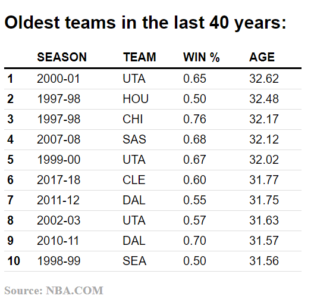
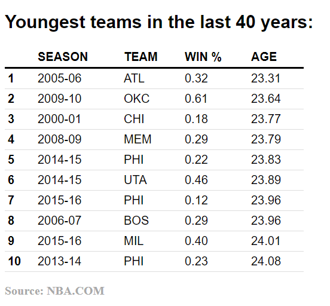
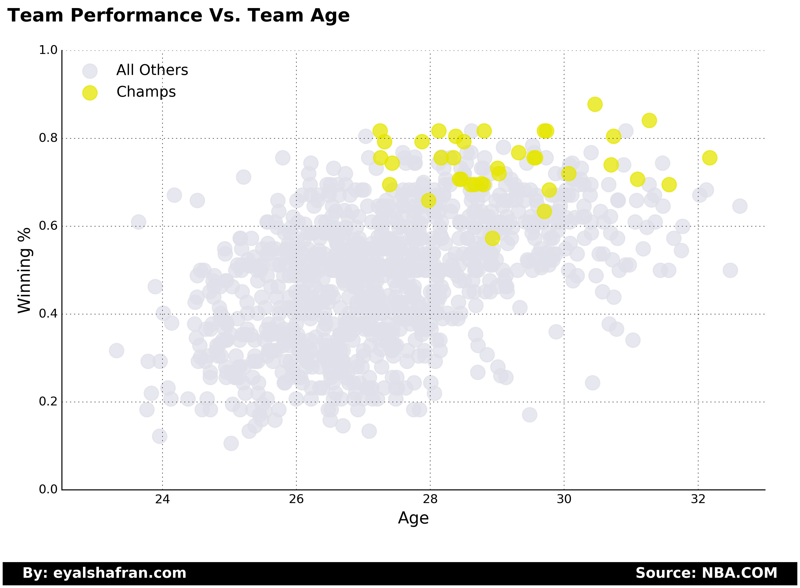
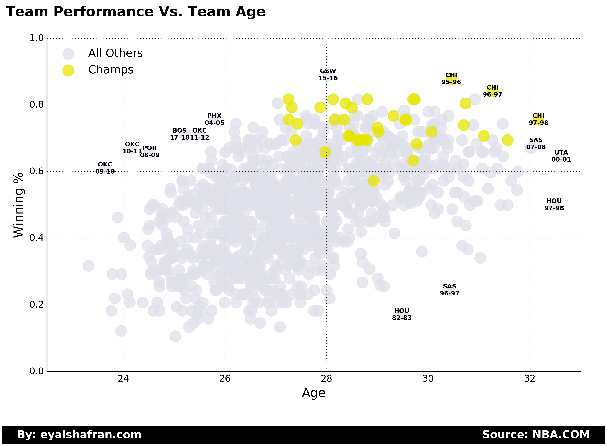
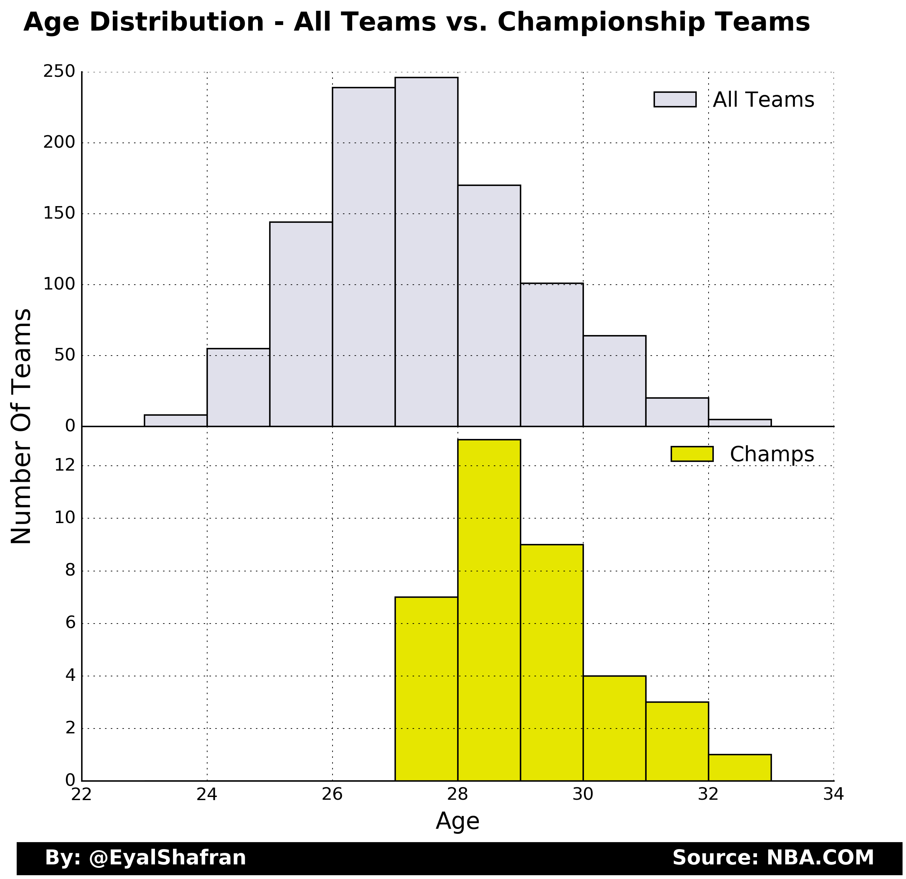
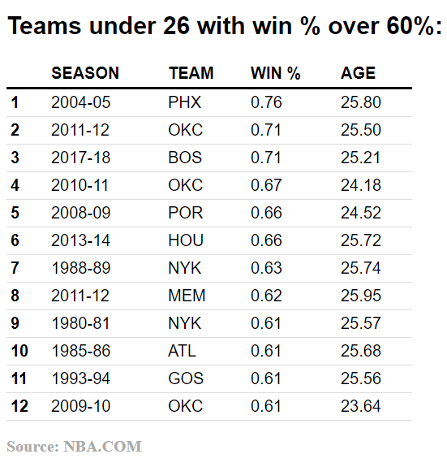
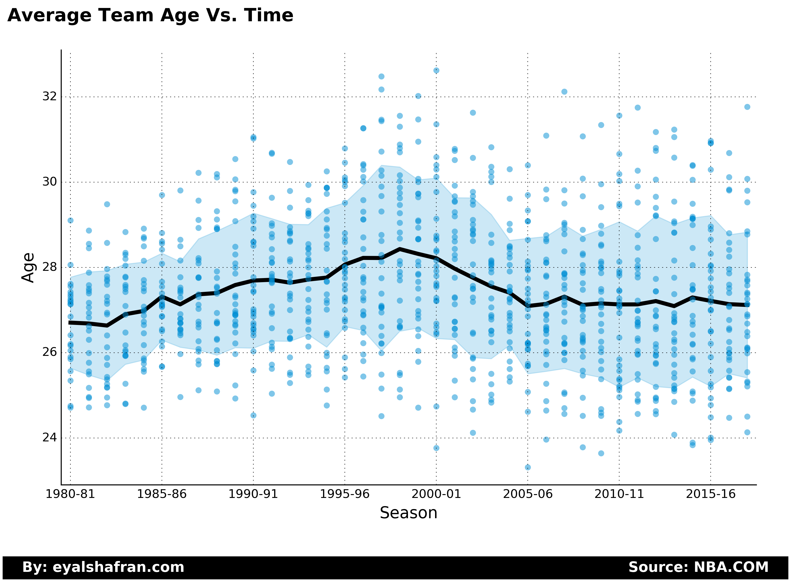
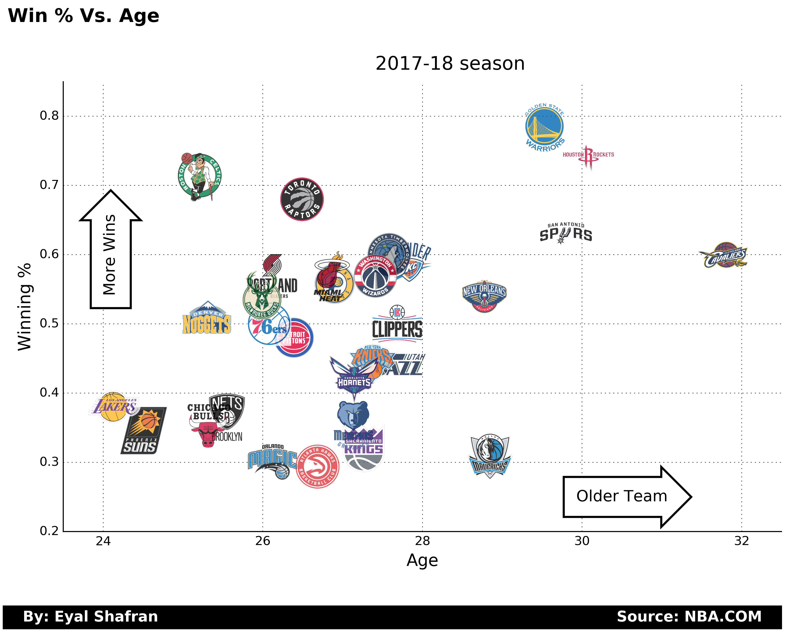
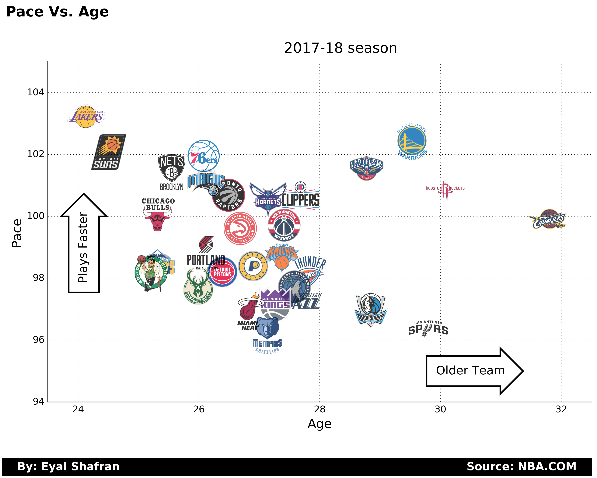

I keep hearing about how old the Cavs are. Are they really that old? What about the Celtics? Are they too young to win a championship? Has there ever been a team with such young lineup play so well?
I decided to answer those questions by looking at team's average age since the 1980-81 season. Since I mostly care about the players that actually play I calculated the team age the following way:
- The team average age is weighted by player's playing minutes. That means that the more a player plays the more they contribute to the average age of the team.
- A player's age for a season is calculated by their exact age on Feb. 1st of that season. For example, for the 2017-18 season, the player's ages where calculated by their age today (Feb. 1st, 2018). This date was choosen since it is roughly the middle of the regular season.
Are the Cavs really that old?
10 Oldest teams in the last 40 years:

They are the 6th oldest team in that timespan. So pretty old. However, most of these old teams were very good teams.
How about the youngest teams?
10 youngest teams in the last 40 years:

We can see that most of those teams are bad. The biggest exception are the Thunder in the 2009-10 season with a win % of 61%!
Let's look at the historical data of team's ages and winning %.
Teams age and winning percentage:

There is a clear trend - older teams have a better winning %. The correlation coefficient is 0.5 which is medium correlation.
This makes sense - older teams are in it to win and younger teams are in rebuild mode. If you are bad, you might as well try to develop the young talent you have on your team.
Let's look at the same figure but this time label some noticeable teams.
Teams age and winning percentage:

It is clear that really young teams don't win the championship. The closest young team were the Thunder who made it to the finals.
If we look at the age distribution of all the teams vs. champoinship teams we can see a clear difference:
Teams age distribution

So it does seem like the Celtics are too inexperienced to win. If they do win the champoinship this year they would be the youngest team to do so by a fairly large margin. On the other hand, plenty of old teams have one it but only one team with a record sub 60% (1994-95 Rockets).
There are only 11 teams that are under 26 and have managed to finish the regular season with over 60% wins. The Celtics are on pace to be the 12th.
Young teams with great winning %:

The intereseting thing is that none of those teams have won the NBA champoinship in the following years. Most noticeable are the Thunder which managed to be included in this list 3 times with the same core players who just got older. We all know how that ended...
Has the average age in the NBA changed over time?
Team Ages Over Time

We can see some small changes over time but the average team age is the same today as it was 40 years ago.
2017-18 Season:

and a bonus figure... Team age vs. pace:

Comments
comments powered by Disqus